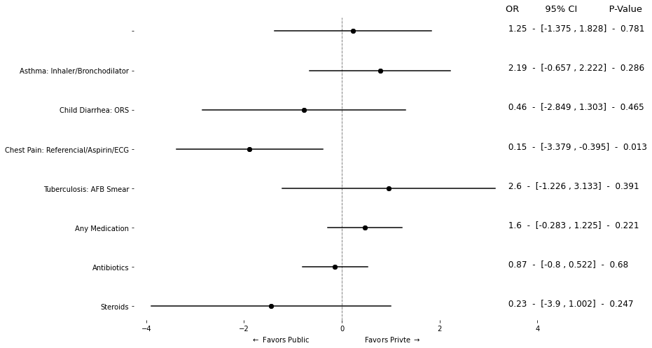
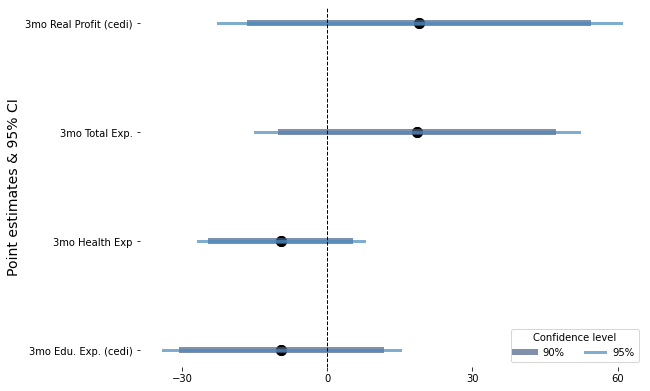
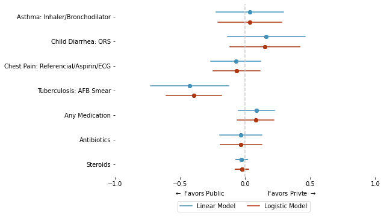
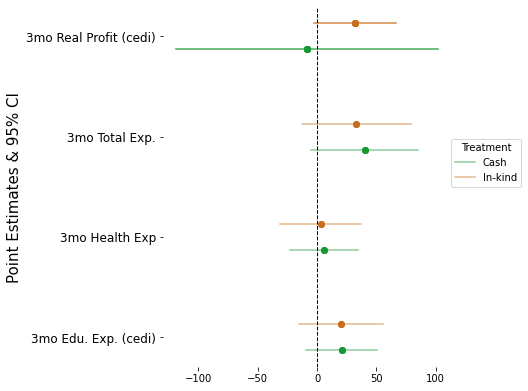

4. Regression Coefficientes#
# Import modules
import pandas as pd, seaborn as sns, numpy as np, matplotlib.pyplot as plt
import statsmodels.formula.api as smf
import statsmodels.api as sm
import math, warnings
import patsy
warnings.filterwarnings('ignore')
from sklearn import preprocessing
label_encoder = preprocessing.LabelEncoder()
---------------------------------------------------------------------------
ModuleNotFoundError Traceback (most recent call last)
Cell In[1], line 8
6 import patsy
7 warnings.filterwarnings('ignore')
----> 8 from sklearn import preprocessing
9 label_encoder = preprocessing.LabelEncoder()
ModuleNotFoundError: No module named 'sklearn'
4.1. With Table#
data1 = pd.read_stata("https://github.com/worldbank/r-econ-visual-library/raw/master/Library/Data/METable.dta")
data1.head()
for i in ['refer', 'med_class_any_6', 'med_class_any_16']:
label_encoder.fit(data1[i])
data1[i] = label_encoder.transform(data1[i])
data1[i] = np.where(data1[i] == 2, np.nan, data1[i])
data1.head()
| study | facilitycode | case | as_correct | as_h1 | as_h2 | as_h6 | as_h7 | as_h8 | as_h12 | ... | kenya_fac_qual_code_2 | kenya_fac_qual_code_3 | price_kenya | facility_private | checklist_essential | sp_roster_age | sp_roster_bmi | sp_roster_bp | sp_roster_bp_sys | sp_roster_male | |
|---|---|---|---|---|---|---|---|---|---|---|---|---|---|---|---|---|---|---|---|---|---|
| 0 | Kenya | 9052302 | Child Diarrhea | NaN | NaN | NaN | NaN | NaN | NaN | NaN | ... | No | No | 230.0 | Private | 0.500 | 31 | 32.038578 | 130/80 | 130 | Female |
| 1 | Kenya | 9012207 | Child Diarrhea | NaN | NaN | NaN | NaN | NaN | NaN | NaN | ... | NaN | NaN | 350.0 | Private | 0.625 | 31 | 32.038578 | 130/80 | 130 | Female |
| 2 | Kenya | 9052301 | Child Diarrhea | NaN | NaN | NaN | NaN | NaN | NaN | NaN | ... | No | No | 400.0 | Private | 0.125 | 31 | 32.038578 | 130/80 | 130 | Female |
| 3 | Kenya | 9022203 | Child Diarrhea | NaN | NaN | NaN | NaN | NaN | NaN | NaN | ... | No | No | 250.0 | Private | 0.125 | 31 | 32.038578 | 130/80 | 130 | Female |
| 4 | Kenya | 9012206 | Child Diarrhea | NaN | NaN | NaN | NaN | NaN | NaN | NaN | ... | No | No | 300.0 | Private | 0.125 | 31 | 32.038578 | 130/80 | 130 | Female |
5 rows × 84 columns
# plt.figure(figsize=(8, 12))
y = ["as_correct", "ch_correct", "cp_correct", "tb_correct"
, "refer"
, "med_any"
,"med_class_any_6", "med_class_any_16"
]
y_label_t = [
"Asthma: Inhaler/Bronchodilator"
, "Child Diarrhea: ORS"
, "Chest Pain: Referencial/Aspirin/ECG"
, "Tuberculosis: AFB Smear"
, "Referred (non-diarrhea)"
, "Any Medication"
, "Antibiotics"
, "Steroids"
]
fmla = " ~ facility_private + C(case_code)"
fmla1 = " ~ facility_private"
coef = []
lower = []
upper = []
p_v = []
varname = []
for i in y:
try:
# mdl = smf.glm(i + fmla, data = data1).fit()
mdl = smf.logit(i + fmla, data = data1).fit();
except:
mdl = smf.logit(i + fmla1, data = data1).fit();
# mdl = smf.glm(i + fmla1, data = data1).fit()
# print(i + fmla1)
coef_data = pd.DataFrame(mdl.summary().tables[1].data)
coef_val = np.float_(np.array(coef_data.iloc[2, [1, 4, 5, 6]]))
coef.append(coef_val[0])
p_v.append(coef_val[1])
lower.append(coef_val[2])
upper.append(coef_val[3])
varname.append(i)
df0 = pd.DataFrame(
{
"coef": coef,
"p_value": p_v,
"l": lower,
"u": upper,
"var": varname,
}
)
df1 = pd.melt(df0,id_vars=['var', 'coef', "p_value"], var_name='range', value_name='range_val').round(3)
OR = df0.coef.map(math.exp)
new_or = []
for i in OR:
vl = str(round(i, 2))
new_or.append(vl)
Optimization terminated successfully.
Current function value: 0.486007
Iterations 5
Optimization terminated successfully.
Current function value: 0.486007
Iterations 5
Optimization terminated successfully.
Current function value: 0.574092
Iterations 5
Optimization terminated successfully.
Current function value: 0.574092
Iterations 5
Optimization terminated successfully.
Current function value: 0.308251
Iterations 7
Optimization terminated successfully.
Current function value: 0.308251
Iterations 7
Optimization terminated successfully.
Current function value: 0.607698
Iterations 6
Optimization terminated successfully.
Current function value: 0.607698
Iterations 5
Warning: Maximum number of iterations has been exceeded.
Current function value: 0.155485
Iterations: 35
Optimization terminated successfully.
Current function value: 0.187942
Iterations 8
Optimization terminated successfully.
Current function value: 0.531125
Iterations 6
Optimization terminated successfully.
Current function value: 0.671791
Iterations 4
Warning: Maximum number of iterations has been exceeded.
Current function value: 0.072542
Iterations: 35
### Plots
OR = df0.coef.map(math.exp)
new_or = []
for i in OR:
new_vl = round(float(i), 2)
new_or.append(new_vl)
df0["OR"] = new_or
table_reg = (" " + df0["OR"].map(str) + " - " + "[" + df0.l.map(str) + " , " + df0.u.map(str) + "]" + " - " + df0.p_value.map(str))[::-1]
fig = plt.figure(figsize = (8, 6))
ax = fig.add_axes([.1, 1, 1, 1])
for i in y[::-1]:
ref_data = df1[df1["var"] == i]
ax.plot("range_val", "var", data = ref_data, color = "black")
ax.scatter("coef", "var", data = ref_data, color = "black")
omit_all = ['left', 'right', 'top', 'bottom']
ax.spines[omit_all].set_visible(False)
ax.axvline(0, linestyle = "-.", lw = .5, color = "black")
for i in range(8):
lbl = table_reg.iloc[i]
ax.text(3.35, i, lbl, size=12);
ax.text(3.35, 7.5, "OR 95% CI P-Value", size = 13);
ax.set_xticks(np.arange(-4, 4.1, 2))
ax.set_xlabel(r"$\leftarrow$ Favors Public Favors Privte $\rightarrow$")
ax.set_yticklabels(y_label_t[::-1])
plt.show();

4.2. With Tables of Two Datasets#
data1 = pd.read_stata("https://github.com/d2cml-ai/python_visual_library/raw/main/data/METable2data.dta")
data2 = pd.read_stata("https://github.com/d2cml-ai/python_visual_library/raw/main/data/METable2data2.dta")
data1['case_3'] = np.where(data1.case == "Case 3", 1, 0)
y_vars = [
"correct",
"treat_cxr",
"re_3",
"re_4",
"med_any",
"med_l_any_2",
"med_l_any_3",
"med_k_any_9"
]
for j in [data1, data2]:
for i in y_vars:
# print(i)
label_encoder.fit(j[i])
j[i] = label_encoder.transform(j[i])
coef0 = []
l0 = []
u0 = []
y_pos = []
y_label = []
p_val = []
y_0 = len(y_vars)
fmla = '~ case_3 + C(city) + C(type_formal)'
for i in y_vars:
while y_0 > 0:
y_pos.append(y_0)
y_0 = y_0 - 1
y1, x_1 = patsy.dmatrices(i + fmla, data = data1, return_type='dataframe')
logit_glm = sm.GLM(y1, x_1, var_weights=data1['weight_city'], family = sm.families.Binomial()).fit(cov_type='HC1').summary().tables[1]
# print(logit_glm)
logit_arr = np.float_(pd.DataFrame(logit_glm.data).iloc[4, [1, 2, 4]])
c = np.exp(logit_arr[0])
coef0.append(c)
l0.append(c - 1.96 * logit_arr[1])
u0.append(c + 1.96 * logit_arr[1])
p_val.append(logit_arr[2])
# print(logit_df)
y_label.append(i)
df1 = pd.DataFrame({"point": coef0, "l" : l0, 'u': u0, "label" : y_label, "y_pos": y_pos, 'pval': p_val})
df11 = pd.melt(df1, id_vars=['point', 'label', 'y_pos', "pval"], value_vars=['l', 'u'])
fmla2 = '~ sp4_spur_1'
coef = []
l = []
u = []
y_pos = []
y_label = []
y_0 = len(y_vars)
p_val = []
for i in y_vars:
while y_0 > 0:
y_pos.append(y_0)
y_0 = y_0 - 1
mdl2 = smf.logit(i + fmla2, data = data2).fit().summary().tables[1]
# print(mdl2)
coefs = np.float_(pd.DataFrame(mdl2.data).iloc[2, [1, 2, 4]])
c = coefs[0]
coef.append(np.exp(c))
l.append(np.exp(c) - 1.96 * coefs[1])
u.append(np.exp(c) + 1.96 * coefs[1])
y_label.append(i)
p_val.append(coefs[2])
df2 = pd.DataFrame({"point": coef, "l" : l, 'u': u, "label" : y_label, "y_pos": y_pos, "pval": p_val})
df21 = pd.melt(df2, id_vars=['point', 'label', 'y_pos', "pval"], value_vars=['l', 'u'])
Optimization terminated successfully.
Current function value: 0.648644
Iterations 5
Optimization terminated successfully.
Current function value: 0.161501
Iterations 8
Optimization terminated successfully.
Current function value: 0.635826
Iterations 5
Optimization terminated successfully.
Current function value: 0.638312
Iterations 5
Optimization terminated successfully.
Current function value: 0.495496
Iterations 6
Optimization terminated successfully.
Current function value: 0.320903
Iterations 6
Optimization terminated successfully.
Current function value: 0.649982
Iterations 5
Optimization terminated successfully.
Current function value: 0.097266
Iterations 8
df1 = df1.round(2)
df2 = df2.round(2)
# df1.iloc[0, :]
fig, ax = plt.subplots(2, 1, facecolor = "white", figsize = (7, 10))
fig.subplots_adjust(hspace = .5)
max_r = 7
for i in y_vars:
ref_data1 = df11[df11.label == i]
ax[0].plot('value', 'y_pos', data = ref_data1, c = "black")
ax[0].scatter("point", "y_pos", data = df11, c = "black")
for i in y_vars:
ref_data2 = df21[df21.label == i]
ax[1].plot('value', 'y_pos', data = ref_data2, c = "black")
ax[1].scatter("point", "y_pos", data = df21, c = "black")
omit = ['top', 'bottom', 'right', 'left']
ylabels = [
'Steroids', 'Other Antibiotic', 'Fluoroquinolone', 'Any Medicine', 'Xpert MTB/RIF', 'Sputum AFB',
'Chest-X-Ray', 'Correct Management'
]
for i in range(2):
ax[i].spines[omit].set_visible(False)
ax[i].set_xlim(1 - max_r, 1 + max_r)
ax[i].axvline(1, c = 'black', lw = 1, alpha = .5)
ax[i].set_yticks(range(1, len(df1) + 1))
ax[i].set_yticklabels(ylabels)
ax[i].set_xticks(np.arange(-6, 8, 3.5))
ax[i].text(max_r + 1, len(df1) + .5 , "OR") # OR
ax[i].text(max_r + 3.5, len(df1) + .5, "95%CI") # CI
ax[i].text(max_r + 5.5, len(df1) + .5, "P-value") # CI
for i in range(len(df1)):
ref_t1 = np.array(df1.iloc[i, :])
ax[0].text(max_r + 1, ref_t1[4], ref_t1[0]) # OR
ax[0].text(max_r + 3, ref_t1[4], f"[{ref_t1[1]} , {ref_t1[2]}]", ) # CI
ax[0].text(max_r + 6, ref_t1[4], ref_t1[5]) # P-value
ax[0].set_xlabel(r"$\leftarrow$ Favors Ordinary (N = 407) Favors Privte (N = 352)$\rightarrow$")
ax[0].set_title("A. Case 1 vs Case 3 in all providers receiving both cases\n", size = 15)
for i in range(len(df2)):
ref_t1 = np.array(df2.iloc[i, :])
ax[1].text(max_r + 1, ref_t1[4], ref_t1[0]) # OR
ax[1].text(max_r + 3, ref_t1[4], f"[{ref_t1[1]} , {ref_t1[2]}]", ) # CI
ax[1].text(max_r + 6, ref_t1[4], ref_t1[5]) # P-value
ax[1].set_xlabel(r"$\leftarrow$ Favors Ordinary (N = 50) Favors Privte (N = 51)$\rightarrow$")
ax[1].set_title("B. SP4 with and without sputum report in Mumbai MBBS+\n", size = 15)
# ax[0].set_xlim(0, 10)
4.3. With Graded error bars#
from linearmodels.panel import PanelOLS as fe
data3 = pd.read_stata("https://github.com/worldbank/r-econ-visual-library/raw/master/Library/Data/ReplicationDataGhanaJDE_short.dta")
data3.head(3)
data30 = data3[(data3.wave >= 2) & (data3.cashtreat != 1)]
def f1(df, a, b):
cond = (df.a == 3) & (df.b == 1)
return cond
data30_she = data30.groupby('sheno')
data30['treatment'] = data30_she['wave'].transform(lambda x: x == 3 ) & data30_she['timetreat'].transform(lambda x: x == 1 )
data30['control'] = data30_she['control'].transform(lambda x: all(x))
data30['after'] = data30_she['wave'].transform(lambda x: np.where(x >=3, True, False))
features = [
"realfinalprofit",
"expend_health_3months",
"expend_education_3months",
"expend_total_3months",
"wave",
"equiptreat",
"after",
"sheno"
]
data31 = data30[(data30['treatment'] == True) | (data30.control == True)][features]
data31 = data31.set_index(['sheno', 'wave'])
data31.head()
| realfinalprofit | expend_health_3months | expend_education_3months | expend_total_3months | equiptreat | after | ||
|---|---|---|---|---|---|---|---|
| sheno | wave | ||||||
| 110101604 | 5 | 351.575378 | 5.0 | 0.0 | 45.0 | 0 | True |
| 3 | 205.722168 | 0.0 | 0.0 | 32.0 | 0 | True | |
| 6 | 402.129395 | 23.0 | 0.0 | 73.0 | 0 | True | |
| 4 | 322.331146 | 0.0 | 0.0 | 25.0 | 0 | True | |
| 2 | 228.246490 | 0.0 | 0.0 | 30.0 | 0 | False |
y = [
"realfinalprofit",
"expend_health_3months",
"expend_education_3months",
"expend_total_3months"
]
fmla = " ~ equiptreat * after - 1"
c, Ci90, Ci95 = [], [], []
y_pos = []
y_lbl = []
y_n = 1
for i in y:
y_lbl.append([i, i])
while y_n <= len(y):
y_pos.append([y_n, y_n])
y_n = y_n + 1
y_data, x_data = patsy.dmatrices(i + fmla, data = data31, return_type='dataframe')
x_data1 = x_data['equiptreat:after[T.True]']
y_data, x_data1
mdl = fe(y_data, exog = x_data1, time_effects=True, drop_absorbed = True).fit( cov_type='clustered'
, cluster_entity = True )
ci95 = np.array(mdl.conf_int().iloc[0, [0, 1]])
ci90 = np.array(mdl.conf_int(.9).iloc[0, [0, 1]])
Ci90.append(ci90)
Ci95.append(ci95)
c.append([mdl.params[0], mdl.params[0]])
c = np.concatenate(c)
Ci90 = np.concatenate(Ci90)
Ci95 = np.concatenate(Ci95)
y_pos = np.concatenate(y_pos)
y_lbl = np.concatenate(y_lbl)
df3 = pd.DataFrame(
{
"point": c,
"ci90": Ci90,
"ci95": Ci95,
"y_pos": y_pos
}
)
| point | ci90 | ci95 | y_pos | |
|---|---|---|---|---|
| 0 | -9.476182 | -30.082561 | -34.033920 | 1 |
| 1 | -9.476182 | 11.130197 | 15.081556 | 1 |
| 2 | -9.610347 | -23.957912 | -26.709284 | 2 |
| 3 | -9.610347 | 4.737218 | 7.488590 | 2 |
| 4 | 18.580187 | -9.496230 | -14.880299 | 3 |
| 5 | 18.580187 | 46.656605 | 52.040673 | 3 |
| 6 | 19.035654 | -15.885621 | -22.581464 | 4 |
| 7 | 19.035654 | 53.956929 | 60.652772 | 4 |
fig = plt.figure(facecolor='white', figsize=(7, 5))
ax = fig.add_axes([.1, 1, 1, 1])
lws = [6, 3]
colors = ["#4b6189", "#478abc"]
for i in range(4):
ref_data = df3[df3.y_pos == i]
plt.scatter("point", "y_pos", data = ref_data, color = "black", label = "", s = 100)
plt.plot("ci90", 'y_pos', data = ref_data, color = colors[0], lw = lws[0], alpha = .7, label = "")
plt.plot("ci95", 'y_pos', data = ref_data, color = colors[1], lw = lws[1], alpha = .7, label = "")
ref_data = df3[df3.y_pos == 4]
ax.scatter("point", "y_pos", data = ref_data, color = "black", label = "", s = 100)
ax.plot("ci90", 'y_pos', data = ref_data, color = colors[0], lw = lws[0], alpha = .7, label = "90%")
ax.plot("ci95", 'y_pos', data = ref_data, color = colors[1], lw = lws[1], alpha = .7, label = "95%")
omit = ['top', 'bottom', 'left', 'right']
y_labels = ['3mo Edu. Exp. (cedi)', '3mo Health Exp', '3mo Total Exp.', '3mo Real Profit (cedi)']
ax.legend(title = "Confidence level", ncol = 2)
ax.axvline(0, color = "black", lw = 1, linestyle = "--")
ax.set_yticks(range(1, 5))
ax.set_xticks(np.arange(-30, 61, 30))
ax.set_yticklabels(y_labels)
ax.set_ylabel("Point estimates & 95% CI", size = 14)
ax.spines[omit].set_visible(False)

4.4. Marginal Effect#
data4 = pd.read_stata("https://github.com/worldbank/r-econ-visual-library/raw/master/Library/Data/RegCoefME.dta")
data4.head()
| study | facilitycode | case | as_correct | as_h1 | as_h2 | as_h6 | as_h7 | as_h8 | as_h12 | ... | kenya_fac_qual_code_2 | kenya_fac_qual_code_3 | price_kenya | facility_private | checklist_essential | sp_roster_age | sp_roster_bmi | sp_roster_bp | sp_roster_bp_sys | sp_roster_male | |
|---|---|---|---|---|---|---|---|---|---|---|---|---|---|---|---|---|---|---|---|---|---|
| 0 | Kenya | 9052302 | Child Diarrhea | NaN | NaN | NaN | NaN | NaN | NaN | NaN | ... | No | No | 230.0 | Private | 0.500 | 31 | 32.038578 | 130/80 | 130 | Female |
| 1 | Kenya | 9012207 | Child Diarrhea | NaN | NaN | NaN | NaN | NaN | NaN | NaN | ... | NaN | NaN | 350.0 | Private | 0.625 | 31 | 32.038578 | 130/80 | 130 | Female |
| 2 | Kenya | 9052301 | Child Diarrhea | NaN | NaN | NaN | NaN | NaN | NaN | NaN | ... | No | No | 400.0 | Private | 0.125 | 31 | 32.038578 | 130/80 | 130 | Female |
| 3 | Kenya | 9022203 | Child Diarrhea | NaN | NaN | NaN | NaN | NaN | NaN | NaN | ... | No | No | 250.0 | Private | 0.125 | 31 | 32.038578 | 130/80 | 130 | Female |
| 4 | Kenya | 9012206 | Child Diarrhea | NaN | NaN | NaN | NaN | NaN | NaN | NaN | ... | No | No | 300.0 | Private | 0.125 | 31 | 32.038578 | 130/80 | 130 | Female |
5 rows × 84 columns
y4 = [
'as_correct', 'ch_correct', 'cp_correct', 'tb_correct',
# "refer"
"med_any", "med_class_any_6", "med_class_any_16"]
for i in y4:
label_encoder.fit(data4[i])
data4[i] = label_encoder.transform(data4[i])
data4[i] = np.where(data4[i] == 2, np.nan, data4[i])
# print(set(data4[i]))
md1 = " ~ facility_private + C(case_code)"
md2 = " ~ facility_private"
ci95 = [] # CI
c = [] # cofficiente
y_n = [] # y posicion
y_name = [] # y label
y_label = []
id_m = 0 # axis 0
main_row = 2
correct_array = ['as_correct', 'ch_correct', 'cp_correct', 'tb_correct']
for i in y4:
while id_m < len(y4): ## Y variables
y_n.append([id_m + 1, id_m + 1, id_m + 1, id_m + 1])
id_m = id_m + 1
### ols
if i in correct_array:
mdl_ols = smf.ols(i + md2, data = data4).fit()
else:
mdl_ols = smf.ols(i + md1, data = data4).fit()
# print(i)
# print(pd.DataFrame(mld_ols.summary().tables[1].data))
coef_ols = np.float_(pd.DataFrame(mdl_ols.summary().tables[1].data).iloc[main_row, [1, 2]])
point = coef_ols[0]
std = coef_ols[1]
y_label.append([i, i])
y_name.append(["ols", "ols"])
c.append([point, point])
ci95.append([point + 1.96 * std, point - 1.96 * std])
### GLM
if i in correct_array:
mdl_glm = smf.logit(i + md2, data = data4).fit()
else:
mdl_glm = smf.logit(i + md2, data = data4).fit()
coef_glm = np.float_(pd.DataFrame(mdl_glm.get_margeff().summary().tables[1].data).iloc[main_row - 1 , [1, 2]])
point_glm = coef_glm[0]
std_glm = coef_glm[1]
y_label.append([i, i])
y_name.append(["glm", "glm"])
c.append([point_glm, point_glm])
ci95.append([point_glm + 1.96 * std_glm, point_glm - 1.96 * std_glm])
Optimization terminated successfully.
Current function value: 0.486007
Iterations 5
Optimization terminated successfully.
Current function value: 0.574092
Iterations 5
Optimization terminated successfully.
Current function value: 0.308251
Iterations 7
Optimization terminated successfully.
Current function value: 0.607698
Iterations 5
Optimization terminated successfully.
Current function value: 0.597636
Iterations 5
Optimization terminated successfully.
Current function value: 0.692627
Iterations 3
Optimization terminated successfully.
Current function value: 0.086124
Iterations 9
df41 = pd.DataFrame(
{
"modelo": np.concatenate(y_name),
"ylbel": np.concatenate(y_label),
"y_pos": np.concatenate(y_n),
"coef": np.concatenate(c),
"ci": np.concatenate(ci95)
}
)
fig = plt.figure()
ax = fig.add_axes([.1, 1, 1, 1])
mdls = ['ols', 'glm']
y_val = np.unique(df41.y_pos)
separate = .2
colors = ['#4392bc', '#af370f']
for i in mdls:
for j in y_val:
ref_data = df41[(df41.y_pos == j) & (df41.modelo == i)]
if i == "ols":
ref_data['y_pos'] = 8 - ref_data['y_pos'] + separate
cl = colors[0]
elif i == "glm":
cl = colors[1]
ref_data['y_pos'] = 8- ref_data['y_pos'] - separate
ax.plot("ci", "y_pos", data = ref_data, c = cl, label = "")
ax.scatter("coef", "y_pos", data = ref_data, c = cl, label = "")
# ax.text("coef", "y_pos", "ylbel", data = ref_data)
for i in mdls:
ref_data = df41[(df41.y_pos == 7) & (df41.modelo == i)]
if i == "ols":
ref_data['y_pos'] = 8 - ref_data['y_pos'] + separate
cl = colors[0]
lbl = "Linear Model"
elif i == "glm":
cl = colors[1]
ref_data['y_pos'] = 8 - ref_data['y_pos'] - separate
lbl = "Logistic Model"
ax.plot("ci", "y_pos", data = ref_data, c = cl, label = lbl)
ax.scatter("coef", "y_pos", data = ref_data, c = cl, label = "")
y_label_t = [
"Asthma: Inhaler/Bronchodilator"
, "Child Diarrhea: ORS"
, "Chest Pain: Referencial/Aspirin/ECG"
, "Tuberculosis: AFB Smear"
# , "Referred (non-diarrhea)"
, "Any Medication"
, "Antibiotics"
, "Steroids"
]
omit = ['top', 'right', 'left', 'bottom']
ax.spines[omit].set_visible(False)
ax.set_xlabel(r"$\leftarrow$ Favors Public Favors Privte $\rightarrow$")
ax.set_xlim(-1, 1)
ax.set_xticks(np.arange(-1, 1.1, .5))
ax.set_yticks(np.arange(1, 7.1, 1))
ax.set_yticklabels(y_label_t[::-1])
ax.legend(ncol = 2, loc = (.24, -.2))
ax.axvline(0, linestyle = "--", lw = 1.5, color = "#cccccc")
plt.show();

4.5. Multiple Outcomes#
data5 = pd.read_csv("https://github.com/d2cml-ai/python_visual_library/raw/reg-coef/data/GhanaJDE.csv")
features = [
"expend_health_3months",
"expend_education_3months",
"expend_total_3months",
'realfinalprofit', 'cashtreat', 'equiptreat', 'after', 'wave', 'sheno']
data5 = data5[features]
data5_inx = data5.set_index(['sheno', 'wave'])
data5_inx
data5 = pd.read_csv("https://github.com/d2cml-ai/python_visual_library/raw/reg-coef/data/GhanaJDE.csv")
features = [
"expend_health_3months",
"expend_education_3months",
"expend_total_3months",
'realfinalprofit', 'cashtreat', 'equiptreat', 'after', 'wave', 'sheno']
data5 = data5[features]
data5_inx = data5.set_index(['sheno', 'wave'])
data5_inx.head()
| expend_health_3months | expend_education_3months | expend_total_3months | realfinalprofit | cashtreat | equiptreat | after | ||
|---|---|---|---|---|---|---|---|---|
| sheno | wave | |||||||
| 110101604 | 5 | 5.0 | 0.0 | 45.0 | 351.575378 | 0 | 0 | True |
| 3 | 0.0 | 0.0 | 32.0 | 205.722168 | 0 | 0 | True | |
| 6 | 23.0 | 0.0 | 73.0 | 402.129395 | 0 | 0 | True | |
| 4 | 0.0 | 0.0 | 25.0 | 322.331146 | 0 | 0 | True | |
| 2 | 0.0 | 0.0 | 30.0 | 228.246490 | 0 | 0 | False |
y = [
"expend_education_3months",
"expend_health_3months",
"expend_total_3months",
"realfinalprofit"
]
y_label = []
ci = []
c = []
y_pos = []
y_lbl = []
y_ticks_lbl = []
y_n = 1
for i in y:
while y_n <= len(y):
y_pos.append(np.repeat(y_n, 4))
y_n = y_n + 1
#----
flma = i + " ~ (cashtreat + equiptreat) * after - 1"
y_data, x_data = patsy.dmatrices(flma, data5_inx, return_type='dataframe')
x_data1 = x_data.filter(['cashtreat:after[T.True]',
'equiptreat:after[T.True]'])
#----
mdl = fe(y_data, exog = x_data1, time_effects=True, entity_effects=True).fit(cov_type='clustered'
, cluster_entity = True )
#---
y_ll = ['cash', 'cash', 'kind', 'kind']
y_lbl.append(y_ll)
y_ticks_lbl.append(np.repeat(i, 4))
point_cash = mdl.params[0]
point_kind = mdl.params[1]
cash_ci = np.array(mdl.conf_int().iloc[0, [0, 1]])
kind_ci = np.array(mdl.conf_int().iloc[1, [0, 1]])
c.append([point_cash, point_cash, point_kind, point_kind])
ci.append([cash_ci, kind_ci])
y_pos = np.concatenate(y_pos)
c = np.concatenate(c)
ci = np.concatenate(np.concatenate(ci))
y_lbl = np.concatenate(y_lbl)
lbls_y = np.concatenate(y_ticks_lbl)
df5 = pd.DataFrame(
{
"y_pos": y_pos,
"point": c,
"ci": ci,
"type": y_lbl,
"y": lbls_y
}
)
d_iff, alphha = .13, .5
df5['y_pos1'] = np.where(df5['type'] == "cash", df5['y_pos'] - d_iff, df5['y_pos'] + d_iff)
cls = ["#c96e1e", '#169930']
fig = plt.figure(facecolor='white', figsize=(4, 5))
ax = fig.add_axes([.1, 1, 1, 1])
for i in y:
for j in ['cash', 'kind']:
if j == 'cash':
cl = cls[1]
else:
cl = cls[0]
ref_data = df5[(df5['type'] == j) & (df5['y'] == i)]
ax.scatter("point", "y_pos1", data = ref_data, color = cl, label = "")
ax.plot("ci", "y_pos1", data = ref_data, color = cl, label = "", alpha = alphha)
for j in ['cash', 'kind']:
if j == 'cash':
cl = cls[1]
lbl = "Cash"
else:
cl = cls[0]
lbl = "In-kind"
ref_data = df5[(df5['type'] == j) & (df5['y'] == "realfinalprofit")]
ax.scatter("point", "y_pos1", data = ref_data, color = cl, label = "")
ax.plot("ci", "y_pos1", data = ref_data, color = cl, label = lbl, alpha = alphha)
y_labels = ['3mo Edu. Exp. (cedi)', '3mo Health Exp', '3mo Total Exp.', '3mo Real Profit (cedi)']
omit = ['top', 'bottom', 'left', 'right']
ax.legend(title = "Treatment", loc = (1, .5))
ax.axvline(0, lw = 1, linestyle = "--", color = "black")
ax.set_ylabel("Point Estimates & 95% CI", size = 15)
ax.set_yticks(range(1, 5))
ax.set_xticks(np.arange(-100, 101, 50))
ax.set_yticklabels(y_labels, size = 12)
ax.spines[omit].set_visible(False)

4.6. Point Estimates by Rounds#
data6 = pd.read_csv("https://github.com/d2cml-ai/python_visual_library/raw/reg-coef/data/GhanaJDE.csv")
features = ['realfinalprofit', 'cashtreat', 'equiptreat', 'after', 'wave', 'sheno']
data6 = data6[features]
data6['wave1'] = data6['wave'].astype('category')
data6_inx = data6.set_index(['sheno', 'wave'])
data6_inx.head()
flma = "realfinalprofit ~ (cashtreat + equiptreat) * wave1 -1"
y_data, x_data = patsy.dmatrices(flma, data6_inx, return_type='dataframe')
x_data1 = x_data.filter(regex=r"cashtreat:|equiptreat:")
mdl = fe(y_data, exog = x_data1, time_effects=True, entity_effects=True).\
fit(cov_type='clustered', cluster_entity = True )
c = []
ci = []
x_p = mdl.params
x_ci = mdl.conf_int()
for i in range(0, len(x_p)):
c.append([x_p[i], x_p[i]])
ci.append(np.array(x_ci.iloc[i, [0, 1]]))
x_n = np.arange(1, 5, 1)
c = np.concatenate(c)
ci = np.concatenate(ci)
lbl = np.concatenate([np.repeat("cash", 8), np.repeat("equi", 8)])
x_pos = np.concatenate([np.repeat(x_n, 2), np.repeat(x_n, 2)])
df6 = pd.DataFrame(
{
"point": c,
"ci" : ci,
"treat" : lbl,
"x" : x_pos
}
)
sep = .15
df6['x_pos'] = np.where(df6.treat == 'cash', df6.x - sep, df6.x + sep)
df6.head()
| point | ci | treat | x | x_pos | |
|---|---|---|---|---|---|
| 0 | 0.396657 | -96.518288 | cash | 1 | 0.85 |
| 1 | 0.396657 | 97.311602 | cash | 1 | 0.85 |
| 2 | -25.720863 | -150.319739 | cash | 2 | 1.85 |
| 3 | -25.720863 | 98.878013 | cash | 2 | 1.85 |
| 4 | -16.036545 | -124.272709 | cash | 3 | 2.85 |
fig = plt.figure(figsize=(8, 5))
ax = fig.add_axes([.1, 1, 1, 1])
cls = ["#169930", '#c96e1e']
omit = ['right', 'left', 'top', 'bottom']
alpha = 1
for i in ['cash', 'equi']:
for j in x_n:
ref_data = df6[(df6.x == j) & (df6.treat == i)]
if i == 'cash':
cl = cls[0]
else:
cl = cls[1]
plt.plot("x_pos", 'ci', data = ref_data, c = cl, label = "")
plt.scatter('x_pos', 'point', data = ref_data, c = cl, label = "")
for i in ['cash', 'equi']:
ref_data = df6[(df6.x == j) & (df6.treat == 1)]
if i == 'cash':
cl = cls[0]
lbl = "Cash"
else:
cl = cls[1]
lbl = "Equipment"
plt.plot("x_pos", 'ci', data = ref_data, c = cl, label = lbl)
plt.scatter('x_pos', 'point', data = ref_data, c = cl, label = "")
x_ti_labels = ['Wave 3', 'Wave 4', 'Wave 5', "Wave 6"]
ax.legend(title = "Treatment Group", loc = (1, .4), )
ax.axhline(0, c = 'black', lw = 1, linestyle = "--")
ax.spines[omit].set_visible(False)
ax.set_yticks(np.arange(-150, 151, 50))
ax.set_xticks(np.arange(1, 5, 1))
ax.set_xticklabels(x_ti_labels, size = 14)
ax.set_ylabel("Point Estimates & 95% CI", size = 15)
plt.show();
Text(0, 0.5, 'Point Estimates & 95% CI')